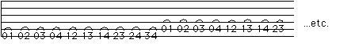
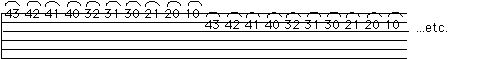

Legato Combinations
Ascending:

Descending:

1 - (Ascending) Use the tips of the fingers. Don't swing from too far away from the string: keep the finger that will be hammering on only an eighth of an inch from the string and come right down on the tip of the finger. Don't get tense trying to smash your finger down, if the action is correct minimal energy is required to make the note come out.
2 - (Both) These must be played evenly, like a bunch of eighth notes. Put on your metronome so that it clicks once per note (that is, a click for "0", a click for "1", a click for "0", a click for "2", etc.) if you're not sure if you're playing evenly.
3 - (Descending) The "pull-offs" are actually string plucks executed with the left hand. The right-hand plucked note and the pull-off note should be the same loudness.
4 - (Descending) This is easiest to do on the first (highest) string, because as you pull down with the finger,there is no string underneath to run into. On the other strings you can either use the under string as a backstop, in effect executing a "rest stroke" with the left hand, or the trajectory of the left hand finger can lift it enough to clear the under string. Both are appropriate for different situations, so both must be practiced.